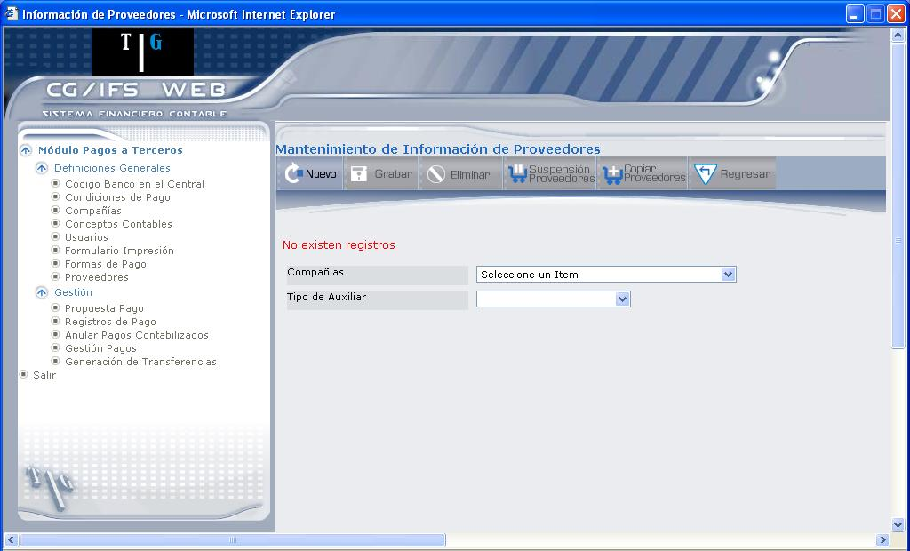
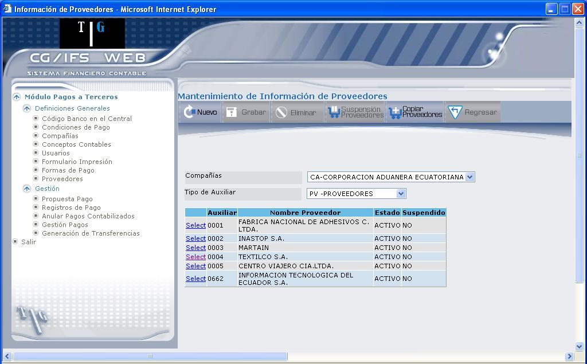
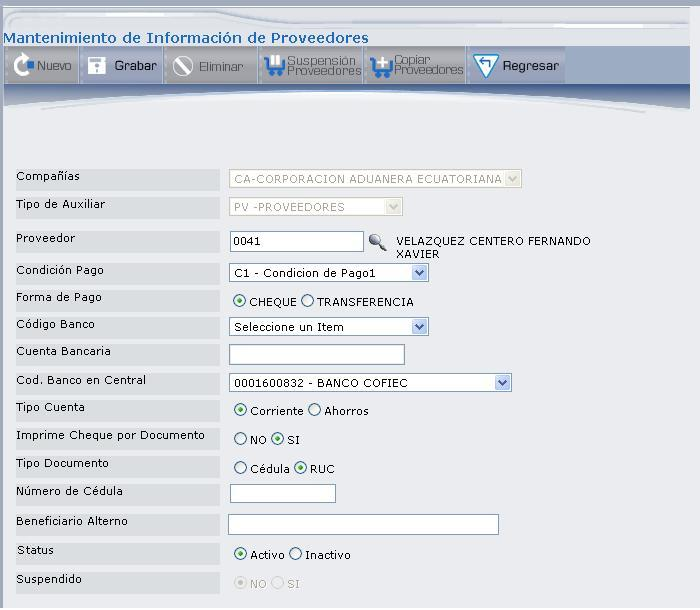
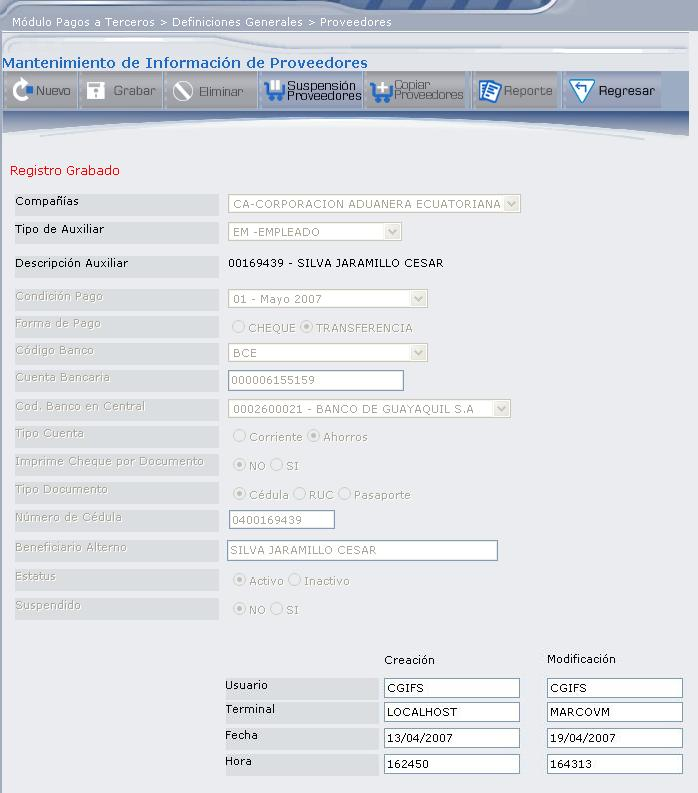
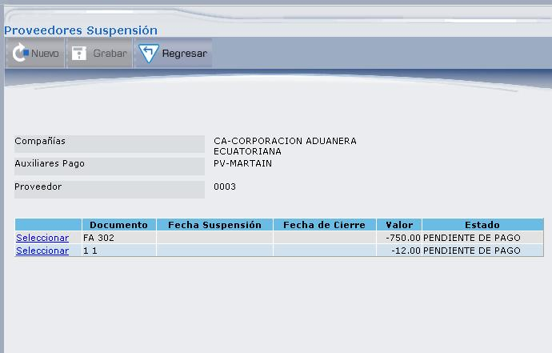
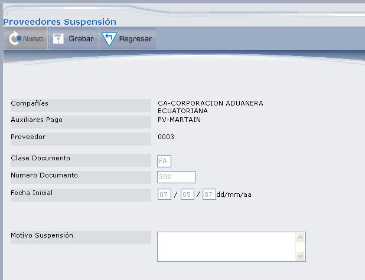
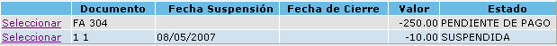
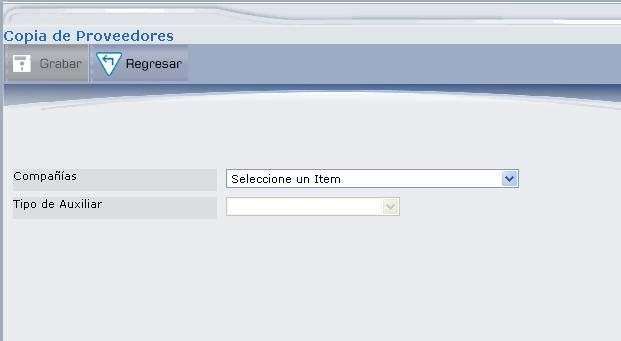
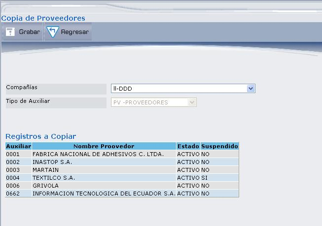

Proveedores
El Módulo Generador de Pagos usa como Proveedores a los auxiliares definidos en CG/Web o por omisión los definidos por las interfaces dinámicas. Sin embargo algunos datos complementarios que no existen en CG/Web pueden ser indicados en este archivo. Esta opción permite asignar estos datos adicionales a los Proveedores que los requieran.
Al seleccionar esta opción se despliega la pantalla como muestra la Figura 3.38.

Figura 3. Mantenimiento de Información de Proveedores.
Compañía:
Seleccione la compañía de la cual desea definir los Proveedores.
Tipo de Auxiliar:
Seleccione con qué tipo de auxiliar desea trabajar, en este caso deberá seleccionar PV Proveedores. Una vez que seleccione el Tipo de Auxiliar se despliegan los Proveedores que corresponden al Tipo de Auxiliar seleccionado, como muestra la Figura 3.39.
Si no existe ningún Proveedor se despliega el mensaje: “No existen registros”.

Figura 3. Lista de Proveedores.
En esta pantalla pueden observarse los Proveedores del tipo de auxiliar seleccionado y sus principales campos. Estos campos son los siguientes: Código de Proveedor (código auxiliar que se usa en CG), nombre del Proveedor (nombre de auxiliar), estado del Proveedor y si se encuentra suspendido ó no (SI=si todos los documentos de pago se encuentran suspendidos).
Mediante esta pantalla el usuario podrá realizar las siguientes acciones:
- Actualizar la información de los Proveedores que estén registrados, dando clic en el vínculo Select. Los campos de actualización del Proveedor se explican en la pantalla de la Figura 3.40. (Detalle de Proveedores).
- Asignar un nuevo Proveedor a la compañía, dando clic en el botón NUEVO, que se explica a continuación.

Figura 3. Detalle de Proveedores.
Compañía:
Despliega el código y nombre de la compañía, en la que se va a registrar el Proveedor.
Tipo de Auxiliar:
Despliega el código y descripción del tipo de auxiliar.
Proveedor:
Digite el Código del Proveedor que desea registrar, si no conoce el código, presione el ícono () que despliega una lista de Proveedores. Escoja el Proveedor dando clic en el vínculo Select.
Condición Pago:
Seleccionar el código de condición de pago convenida con el Proveedor. Este campo es opcional y debe haber sido definido en su respectiva tabla.
Forma de Pago:
Forma en que se harán los pagos a este Proveedor, para ello se utilizará la forma de pago aquí indicada, sin embargo en el momento de hacer la selección de pagos se puede modificar esta forma de pago. Marque el casillero de selección correspondiente a la forma de pago (Puede ser CHEQUE o TRANSFERENCIA).
Código Banco:
Código de banco preferente para pagos. Los pagos a este Proveedor se harán a través del banco aquí indicado, sin embargo en el momento de hacer la selección se puede modificar el banco.
Cuenta Bancaria:
Si los pagos al Proveedor se hacen a través de depósitos en su cuenta o de transferencias bancarias, usted debe indicar aquí el número de cuenta bancaria del Proveedor. Este campo es opcional y no realiza ninguna validación.
Cod. Banco en Central:
Seleccione el banco con la cuenta corriente en el Banco Central, este dato servirá para los pagos interbancarios.
Tipo Cuenta:
Seleccione el tipo de cuenta del Proveedor: Corriente o Ahorros.
Imprime Cheque por Documento:
En este parámetro se indica si por cada documento que cancele al Proveedor se va a emitir un cheque o si se hará uno sólo por el total de documentos a cancelar. Si selecciona “SI” se hará un pago por cada documento, de lo contrario se emitirá un sólo pago por todos los documentos.
Tipo Documento:
Seleccione el tipo de documento del Proveedor (Cédula ó RUC).
Número de Cédula:
Permite registrar el número de identificación del Proveedor.
Beneficiario Alterno:
Si los pagos a este Proveedor no se hacen a su nombre, sino a nombre de un tercero, usted puede indicar en este campo el nombre de la persona o institución a nombre de quien se harán los pagos.
Status:
Permite definir el estado del Proveedor (Activo o Inactivo).
Suspendido:
Estos casilleros se muestran protegidos y cambian automáticamente. El casillero “SI” se muestra marcado si todos los documentos se encuentran en estado SUSPENDIDO; caso contrario, si existe al menos un documento en un estado diferente a ‘SUPENDIDO’, se muestra marcado el casillero “NO”.
A continuación presione el botón GRABAR. Después de haber grabado el registro del proveedor, se despliega en la parte inferior el detalle sobre la creación y modificación, como se muestra en la Figura 3.41.

Figura 3. Detalle de Creación y Modificación del Registro de Proveedores.
Creación: Usuario que registró la nueva forma de pago, Nombre de la Terminal, Fecha y hora de creación.
Modificación: Usuario que realizó la última modificación, Nombre de la Terminal, Fecha y hora de modificación.
BOTONES

Figura 3. Lista de documentos pendientes de pago.
Esta pantalla presenta un encabezado y un detalle. En el encabezado se despliega el nombre de la compañía, la cuenta auxiliar de pago, el código del Proveedor y en el detalle se despliega la lista de documentos del Proveedor. Seleccione el documento que desea suspender dando clic en el vínculo Seleccionar, se desplegará la pantalla que muestra la Figura 3.43.

Figura 3. Detalle de Documento – Motivo de Suspensión.
Motivo Suspensión:
Digite el motivo por el cual se suspende el documento del Proveedor y presione el botón GRABAR, se desplegará el mensaje: “¿Está seguro de suspender este documento?”. Presione el botón ACEPTAR para suspenderlo.
Al regresar a la pantalla de listado de documentos del Proveedor, se despliega la fecha en la que se suspendió y el cambio de estado, como muestra la flecha 1 y 2 de la Figura 3.44.

Figura 3. Ejemplo de Documento Suspendido.

Figura 3. Copiar Proveedores – Seleccionar Compañía.
Compañía:
Seleccione la compañía en la cual se van a copiar los Proveedores; se despliega automáticamente el tipo de auxiliar que corresponde a la compañía y la lista de Proveedores que se van a copiar, como se puede observar en la Figura 3.46.

Figura 3. Copiar Proveedores.
La lista de Proveedores permitirá al usuario verificar que los registros que se despliegan son todos los que se copiarán en la compañía seleccionada. Presione el botón GRABAR, para registrar la copia de Proveedores, se presentará el mensaje: “Los registros fueron grabados con éxito”.
Created with the Personal Edition of HelpNDoc: Write eBooks for the Kindle